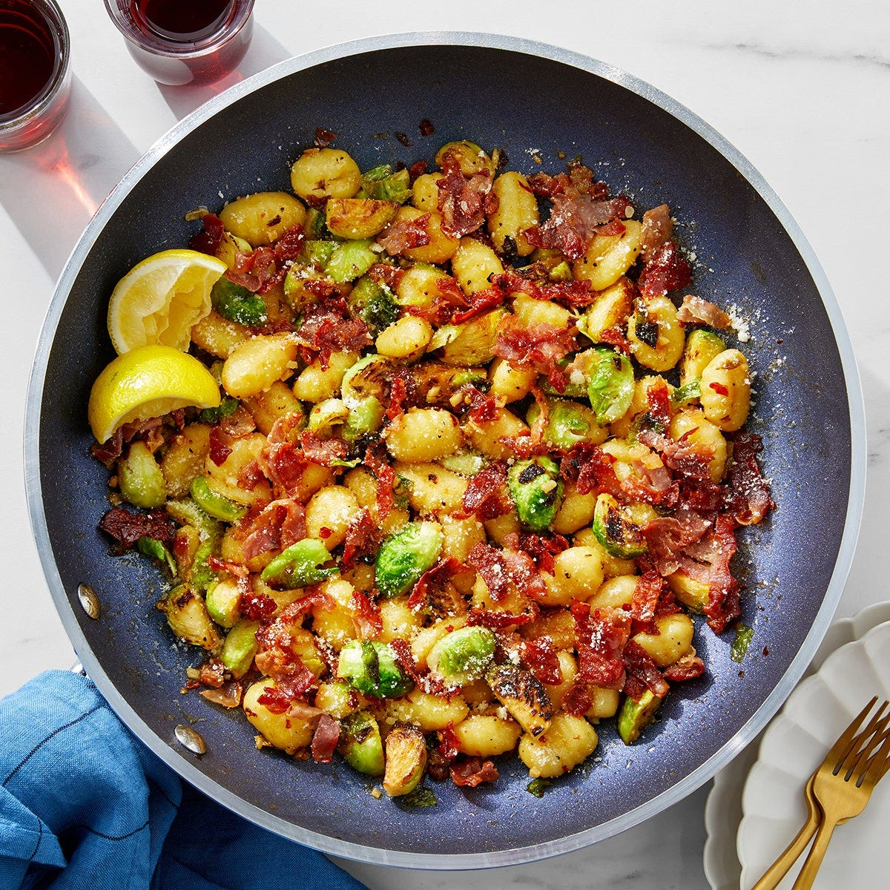

Prosciutto Gnocchi
Source: “One-Pan Prosciutto Gnocchi” from Blue Apron
Yield: 2 servings
Ingredients
- 3 oz prosciutto
- 1 lemon
- 2 tbsp butter
- ¾ lb gnocchi
- 2 cloves garlic
- ¼ cup grated romano cheese (I leave this out)
- ½ lb brussels sprouts
- 1 tbsp honey
- ¼ tsp crushed red pepper flakes
Instructions
- Remove the honey from the refrigerator to bring to room temperature. Wash and dry the fresh produce. Stack the prosciutto (removing the plastic lining between the slices), then thinly slice crosswise. Cut off and discard the stem ends of the brussels sprouts; quarter lengthwise. Peel and roughly chop 2 cloves of garlic. Quarter and deseed the lemon.
- In a large pan (nonstick, if you have one), heat a drizzle of olive oil on medium-high until hot. Add the sliced prosciutto. Cook, stirring frequently and breaking apart any clumps, 2 to 3 minutes, or until crispy. Leaving any browned bits (or fond) in the pan, transfer to a paper towel-lined plate.
- In the pan of reserved fond, heat 3 tablespoons of olive oil on medium-high until hot. Add the quartered brussels sprouts in an even layer. Cook, without stirring, 3 to 4 minutes, or until light browned. Add the chopped garlic and as much of the red pepper flakes as you’d like, depending on how spicy you’d like the dish to be. Season with salt and pepper. Cook, stirring frequently, 1 to 2 minutes, or until softened.
- To the pan, add the gnocchi and ⅓ cup of water (carefully, as the liquid may splatter). Cook, stirring occasionally, 2 to 3 minutes, or until the water has cooked off and the gnocchi are tender. Add the butter and honey; season with salt and pepper. Cook, stirring frequently, 2 to 3 minutes, or until the butter is melted and combined. Turn off the heat. Carefully stir in the juice of 2 lemon wedges. Taste, then season with salt and pepper if desired. Serve the finished gnocchi topped with the crispy prosciutto and cheese. Serve the remaining lemon wedges on the side. Enjoy!